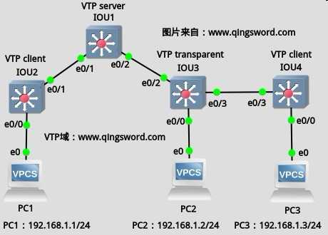

[CCNA图文笔记]-21-VTP协议实例详解
引言
这篇文章介绍VTP协议，包括VTP的作用、特点、默认信息、域名、通告、模式以及裁剪，最后用两个实例来演示VTP的配置。
文章目录
- 0×1.VTP协议介绍
- a.VTP的作用
- b.VTP的特点
- c.如何查看VTP信息
- d.什么是VTP域名
- e.什么是VTP通告
- f.VTP模式有哪几种
- 0×2.VTP配置实例
- a.VTP综合实验
- b.VTP裁剪（Pruning）实例
- 0×3.VTP配置需要注意的问题
0×1.VTP协议介绍
Cisco交换机一旦通过某种方式激活了干线（Trunk），这些交换机会通过通告报文来指示哪些VLAN是可用的，并且会维持这些VLAN的相关信息，这种功能就叫做VTP（Vlan Trunking Protocol，VLAN中继协议）。VTP是思科私有的协议，但大多数交换机都支持该协议。
a.VTP的作用
使用VTP可以将一台交换机配置成VTP Server，将其余的交换机配置成VTP Client，那么作为VTP Client的交换机会自动同步VTP Server交换机上面配置的VLAN信息，这样就不需要在每一台交换机上配置相同的VLAN信息；对VTP Server上VLAN的添加和删除重命名等操作会自动同步到VTP Client，确保了整个网络配置的一致性。
b.VTP的特点
VTP是一种消息协议，使用第二层帧，通过VLAN1传输；可以用VTP管理网络的VLAN范围从1到1005，VTP不能管理扩展的VLAN（大于1005）。VTP协议使用VTP通告（VTP advertisements）在交换机间交互VLAN信息，VTP通告只能在Trunk（主干）链路上上互交信息。
c.如何查看VTP信息
一台思科交换机的默认VTP信息大致如下，通过下面的命令来查看：
Switch#show vtp status VTP Version : 2 Configuration Revision : 0 Maximum VLANs supported locally : 255 Number of existing VLANs : 5 VTP Operating Mode : Server VTP Domain Name : VTP Pruning Mode : Disabled VTP V2 Mode : Disabled VTP Traps Generation : Disabled MD5 digest : 0x7D 0x5A 0xA6 0x0E 0x9A 0x72 0xA0 0x3A Configuration last modified by 0.0.0.0 at 0-0-00 00:00:00 Local updater ID is 0.0.0.0 (no valid interface found) Switch# /* * "VTP Version:2" 表示这台交换支持两种VTP版本(1和2)，默认运行的是版本1， * 这里显示的2，不代表默认运行的版本是 Version 2，只代表支持几种版本。 * * "Configuration Revision:0" 配置修正号是0， * 交换机上VLAN配置信息发生改变时，配置修正号自动加1， * 配置修正号暗示了交换机VLAN配置信息的新旧。 * * "Maximum VLANs supported locally:255" * 表示交换机最大可配置的VLAN数量是255个，这个值和交换机的型号有关。 * * "Number of existing VLANs:5" 当前已经有5个VLAN， * 交换机默认VLAN就是5个（VLAN1、VLAN1002-1005）。 * * "VTP Operating Mode:Server" 交换机当前的VTP模式是VTP Server。 * * "VTP Domain Name" VTP域名，没有配置的时候为空。 * * "VTP Pruning Mode:Disabled" 是否开启了VTP裁剪功能，默认没有开启。 * * "VTP V2 Mode:Disabled" VTP版本2没有开启，所以默认是使用版本1， * 可以使用下面这条命令修改VTP使用的版本: * Switch(config)#vtp version 1或2。 * * "VTP Traps Generation" Trap主要用来为SNMP服务器发送消息，默认没有开启。 * * "MD5 digest" 从VTP计算得出的散列值，如果VLAN信息发生改变该值也会改变。 * * "Configuration last modified" 最后配置改变的时间。 * * "Local updater ID" 发送VTP信息的端口IP地址，可以手动指定发送VTP信息的端口。 */
d.什么是VTP域名
VTP协议允许在一台交换机上集中配置，所做的配置会被自动传播到网络中所有其他的交换机上，前提是这些交换机都在一个VTP域中；同一个域中的交换机拥有相同的VTP域名；默认的域名为空，此时交换机不会向外传播VTP通告，并且一个交换机只能加入一个VTP域。
可以使用下面的命令更改VTP域名：
/*修改VTP域名为"qingsword.com"*/ Switch(config)#vtp domain qingsword.com Changing VTP domain name from NULL to qingsword.com Switch(config)#end /*再次查看VTP状态，可以看到域名已经修改*/ Switch#show vtp status VTP Version : 2 ... VTP Domain Name : qingsword.com ... Switch#
注意，当VTP域名被改变或删除闪存中的VLAN配置文件"vlan.dat"，重启后配置修正号会自动归零；另外，当交换机处于Transparent模式时，因为不需要和其他交换机同步VTP信息，配置修正号始终为0；当网络中的交换机配置修正号都为0的时候，他们之间不会同步VLAN配置信息。
在同一个域中，如果没有设置VTP密码，只要域名相同，配置修正号大的交换机的VLAN配置将覆盖配置修正号小的交换机的VLAN配置，这样非常不安全，可以通过下面的命令配置一个VTP密码，只有域名和密码都相同的情况下，才会互交VLAN配置信息：
Switch(config)#vtp password ccna
在后面的综合试验中会演示这些命令。
e.什么是VTP通告
1）VTP帧结构
VTP被封装在802.1Q或ISL帧中（交换机间主干链路的封装协议），VTP帧以组播的方式发送，目的MAC是保留的MAC地址"01-00-0C-CC-CC-CC"。
VTP帧包括帧头和信息内容：
VTP帧头中包含了VTP域名、域名长度、VTP版本、VTP配置修正号、VTP信息类型（包含了三种信息类型，总汇、子集、查询）等。
VTP信息内容包括MD5散列值、帧的格式（ISL或802.1Q）、每个VLAN的配置信息（配置信息中包括:VLAN ID、VLAN名称、类型、状态等）。
2）VTP通告类型
VTP通告有三种类型：
汇总通告(Summary Advertisements)：汇总通告包含VTP域名、配置修正号以及配置的一些细节。汇总通告有两种发送方式:周期性发送，每隔5分钟被VTP Server或VTP Client发送。触发发送，如果VTP配置发生变化VTP通告立即发送。
子集通告(Subset Advertisements)：在创建或删除VLAN、挂起或激活VLAN、更改VLAN名称、改变VLAN UTM时会发送子集通告。
查询通告(Request Advertisements)：当VTP Server收到一个查询通告时，VTP Server会发送一个VTP汇总通告和一个VTP子集通告。下面这些情况会发送查询通告：VTP域名发生变化时、交换机收到一个汇总通告，通告中的配置修正号高于本交换机的配置修正号、因为某些原因子集通告丢失、交换机重启。
f.VTP模式有哪几种
思科交换机可以被配置成3种VTP模式：
Server模式：Server模式是思科交换机默认的VTP模式，在这种模式下的交换机可以创建、修改、删除VLAN，VTP Server交换机通告自己的VLAN信息给同一个域中的其他交换机，同时也与收到的VTP通告同步VLAN信息，VLAN的配置信息保存在闪存的vlan.dat文件中。
Client模式：工作在这种模式下的交换机不可以创建、修改、删除VLAN，当工作在这种模式下的交换机重启时，它发送一个查询通告给VTP Server，请求更新的VLAN信息。这种模式下的交换机VLAN配置信息也保存在闪存的vlan.dat文件中。
Transparent模式：工作在这种模式下的交换机可以创建、修改、删除VLAN，但所做的修改只影响当前交换机。在这种模式下，交换机可以转发收到的VTP通告给网络中的其他交换机，但只是转发，Transparent模式下的交换机并不发送自己的VTP信息给其他交换机，也不与网络中的其他交换机同步信息。这种模式下的交换机的VLAN配置信息保存在running-config中，并非保存在vlan.dat中。
0×2.VTP配置实例
a.VTP综合实验
下面用一个综合实验来演示VTP三种模式、VTP密码和域名、VTP版本的选择等。需要注意几点，VTP的域名是区分大小写的，VTP版本1和版本2是不兼容的。
实验拓扑如下(本例实验在GNS3+IOU环境下完成，也同样可以在Cisco Packet Tracer 6.2模拟器中完成)：
上图中IOU1-4是IOU虚拟机中运行的交换机IOS，四台交换机配置到"www.qingsword.com"这个VTP域中，PC1-3是vpcs模拟的计算机终端，IP如图所示；配置IOU1为VTP Server，IOU2和IOU4为VTP Client，IOU3为VTP Transparent，交换机和交换机之间配置成主干链路（前面理论部分说过，VTP通告只能在主干链路上发送）：
1）将交换机之间的链路全部配置成主干链路
IOU1配置：
IOU1#conf t IOU1(config)#int e0/1 IOU1(config-if)#swi mod tr IOU1(config-if)#swi tr enc dot IOU1(config-if)#swi tr all vl all IOU1(config-if)#int e0/2 IOU1(config-if)#swi mod tr IOU1(config-if)#swi tr enc dot IOU1(config-if)#swi tr all vl all
IOU2配置：
IOU2#conf t IOU2(config)#int e0/1 IOU2(config-if)#swi mod trunk IOU2(config-if)#swi trunk enc dot1q IOU2(config-if)#swi trunk allow vlan all
IOU3配置：
IOU3#conf t IOU3(config)#int e0/2 IOU3(config-if)#swi mod tr IOU3(config-if)#swi tr enc dot IOU3(config-if)#swi tr all vl all IOU3(config-if)#int e0/3 IOU3(config-if)#swi mod tr IOU3(config-if)#swi tr enc dot IOU3(config-if)#swi tr all vl all
IOU4配置：
IOU4#conf t IOU4(config)#int e0/3 IOU4(config-if)#swi mod tr IOU4(config-if)#swi tr enc dot IOU4(config-if)#swi tr all vl all
2）首先配置网络中的VTP Transparent交换机
IOU3配置：
/*配置交换机VTP模式为Transparent*/ IOU3(config)#vtp mode transparent /*配置VTP域名为"www.qingsword.com"，也可以配置成和VTP Server不同的任意名字，transparent模式下的交换机并不需要和其他交换机拥有相同的域名，也不需要配置密码，它只负责转发收到的VTP报文*/ IOU3(config)#vtp domain www.qingsword.com Changing VTP domain name from NULL to www.qingsword.com /*创建一个VLAN2*/ IOU3(config)#vlan 2 IOU3(config-vlan)#name ind_vlan2 /*将和PC2相连的接口接入VLAN2*/ IOU3(config-vlan)#int e0/0 IOU3(config-if)#swi mod acc IOU3(config-if)#swi acc vlan 2 IOU3(config-if)#exit
3）配置VTP Server交换机
IOU1配置：
/*将交换机VTP模式配置成Server*/ IOU1(config)#vtp mode server /*配置VTP域名*/ IOU1(config)#vtp domain www.qingsword.com /*配置VTP密码*/ IOU1(config)#vtp password 123456 /*将VTP版本改成2*/ IOU1(config)#vtp version 2
4）配置VTP Client
IOU2配置：
/*配置VTP模式为Client*/ IOU2(config)#vtp mode client /*域名要和VTP Server相同*/ IOU2(config)#vtp domain www.qingsword.com /*密码也要和VTP Server配置的相同*/ IOU2(config)#vtp pass 123456
IOU4配置：
IOU4(config)#vtp mod cl IOU4(config)#vtp do www.qingsword.com IOU4(config)#vtp pass 123456
5）在VTP Server上测试新增VLAN，在VTP client交换机上查看是否同步成功
/*新增vlan2和vlan3*/ IOU1(config)#vlan 2 IOU1(config-vlan)#name vlan2 IOU1(config-vlan)#vlan 3 IOU1(config-vlan)#name vlan3 IOU1(config-vlan)#exit
IOU2-4的VTP以及VLAN显示信息：
/* * IOU2和IOU4上面的VTP信息发生了变化，同步了IOU1的配置， * 配置修正号"Configuration Revision"变成了5， * VLAN数也增加到了7，VTP版本也变成了版本2。 */ IOU2#show vtp status VTP Version capable : 1 to 3 VTP version running : 2 VTP Domain Name : www.qingsword.com VTP Pruning Mode : Disabled VTP Traps Generation : Disabled Device ID : aabb.cc00.0200 Feature VLAN: -------------- VTP Operating Mode : Client Maximum VLANs supported locally : 1005 Number of existing VLANs : 7 Configuration Revision : 3 /*IOU2和IOU4的VLAN信息和IOU1保持同步*/ IOU2#show vlan b VLAN Name Status Ports ---- ----------------- --------- -------------------------- 1 default active Et0/0, Et0/2, Et0/3, Et1/0 Et1/1, Et1/2, Et1/3, Et2/0 Et2/1, Et2/2, Et2/3, Et3/0 Et3/1, Et3/2, Et3/3 2 vlan2 active 3 vlan3 active 1002 fddi-default act/unsup 1003 trcrf-default act/unsup 1004 fddinet-default act/unsup 1005 trbrf-default act/unsup /* * IOU3被配置成了Transparent模式，这种模式不和其他交换机同步VLAN信息， * 同时它的配置修正号也始终为0，VTP版本也是默认的版本1， * 但它仍然转发IOU1的VTP通告给IOU4。 */ IOU3#show vtp status VTP Version capable : 1 to 3 VTP version running : 1 VTP Domain Name : www.qingsword.com Feature VLAN: -------------- VTP Operating Mode : Transparent Maximum VLANs supported locally : 1005 Number of existing VLANs : 6 Configuration Revision : 0 /*IOU3的VLAN并没有和IOU1同步*/ IOU3#show vlan b VLAN Name Status Ports ---- ------------------ --------- -------------------------- 1 default active Et0/1, Et1/0, Et1/1, Et1/2 Et1/3, Et2/0, Et2/1, Et2/2 Et2/3, Et3/0, Et3/1, Et3/2 Et3/3 2 ind_vlan2 active Et0/0 1002 fddi-default act/unsup 1003 token-ring-default act/unsup 1004 fddinet-default act/unsup 1005 trnet-default act/unsup /*IOU4的输出和IOU2是一样的，这里就不列出了，大家可以在IOU1上去添加删除VLAN，测试IOU1和IOU4是否会和IOU1的VLAN信息同步。*/
6）将PC1和PC3加入到VLAN2中，并且测试PC1、PC2、PC3的通信是否能够成功
/*IOU2配置*/ IOU2#conf t IOU2(config)#int e0/0 IOU2(config-if)#swi mod acc IOU2(config-if)#swi acc vlan 2 IOU2(config-if)#end /*IOU4配置*/ IOU4#conf t IOU4(config)#int e0/0 IOU4(config-if)#swi mod acc IOU4(config-if)#swi acc vlan 2 IOU4(config-if)#end /*PC1-3配置*/ VPCS> set pcname PC1 PC1> ip 192.168.1.1/24 VPCS> set pcname PC2 PC2> ip 192.168.1.2/24 VPCS> set pcname PC3 PC3> ip 192.168.1.3/24 /*三台计算机能够相互通信*/ PC2> ping 192.168.1.1 84 bytes from 192.168.1.1 icmp_seq=1 ttl=64 time=1.419 ms PC2> ping 192.168.1.3 84 bytes from 192.168.1.3 icmp_seq=1 ttl=64 time=1.128 ms
这一部分实验到此结束。
b.VTP裁剪（Pruning）实例
VTP Pruning（VTP裁剪），是VTP的一个重要功能，能够减少中继端口上不必要的信息量，默认情况下思科的VTP裁剪是关闭的。在下图中，IOU1和IOU2之间的链路被配置成了主干，IOU1被配置成VTP Server，IOU2被配置成VTP Client，PC1-4是用VPCS模拟出来的4台计算机，PC1被划分到VLAN2中，PC2被划分到VLAN3中，PC3被划分到VLAN3中，PC4被划分到VLAN4中；IOU1和IOU2在没有开启VTP裁剪以前，在主干端口"e3/3"上会发送全部VLAN信息的VTP通告，如果开启了VTP裁剪，那么IOU1发给IOU2的VTP通告中将不会包含VLAN2的信息，因为SW2上面没有属于VLAN2的接口，同理IOU2发给IOU1的通告中不会包含VLAN4的信息。
"Cisco Packet Tracer 6.2"不支持VTP裁剪命令，实验在GNS3+IOU环境中模拟，拓扑图如下：

1）将IOU1和IOU2之间的链路配置成主干
/*IOU1配置*/ IOU1#conf t IOU1(config)#int e3/3 IOU1(config-if)#swi mod tr IOU1(config-if)#swi tr enc dot IOU1(config-if)#swi tr all vl all IOU1(config-if)#exit /*IOU2配置*/ IOU2#conf t IOU2(config)#int e0/0 IOU2(config-if)#swi mo tr IOU2(config-if)#swi tr enc dot IOU2(config-if)#swi tr all vl all IOU2(config-if)#exit
2）将IOU1配置成VTP Server
IOU1(config)#vtp mod server IOU1(config)#vtp domain www.qingsword.com IOU1(config)#vtp pass 123456 IOU1(config)#vtp ver 2
3）将IOU2配置成VTP Client
IOU2(config)#vtp mod client IOU2(config)#vtp do www.qingsword.com IOU2(config)#vtp pass 123456
4）在IOU1上增加VLAN2-4，然后在IOU1和IOU2上划分端口到新增的VLAN中
/*IOU1配置*/ IOU1(config)#vlan 2 IOU1(config-vlan)#name vlan2 IOU1(config-vlan)#vlan 3 IOU1(config-vlan)#name vlan3 IOU1(config-vlan)#vlan 4 IOU1(config-vlan)#name vlan 4 IOU1(config-vlan)#int e0/0 IOU1(config-if)#swi mod acc IOU1(config-if)#swi acc vlan 2 IOU1(config-if)#int e0/1 IOU1(config-if)#swi mod acc IOU1(config-if)#swi acc vlan 3 IOU1(config-if)#end /*IOU2配置*/ /*配置前先用下面这个命令确保已经从IOU1学习到了新的VLAN信息*/ IOU2#show vlan b IOU2#conf t IOU2(config)#int e0/0 IOU2(config-if)#swi mod acc IOU2(config-if)#swi acc vlan 3 IOU2(config-if)#int e0/1 IOU2(config-if)#swi mod acc IOU2(config-if)#swi acc vlan 4 IOU2(config-if)#end
5）在没有开启裁剪前查看主干链路信息
IOU1#show interfaces trunk Port Mode Encapsulation Status Native vlan Et3/3 desirable 802.1q trunking 1 Port Vlans allowed on trunk Et3/3 1-4094 Port Vlans allowed and active in management domain Et3/3 1-4 /*这一项显示了VTP裁剪情况，现在还没有VLAN被裁剪*/ Port Vlans in spanning tree forwarding state and not pruned Et3/3 1-4
6）在IOU1上开启VTP裁剪（只需要在VTP Server上开启即可）
IOU1#conf t /*开启VTP裁剪*/ IOU1(config)#vtp pruning Pruning switched on /*再次查看IOU1主干信息*/ IOU1#show interfaces trunk Port Vlans in spanning tree forwarding state and not pruned Et3/3 1,3-4 /* * IOU1的主干端口上面裁剪掉了VLAN2的信息， * 因为IOU2上没有端口在VLAN2下， * 同理，在IOU2上运行上面的命令，会看到1-3，即裁剪掉了Vlan4的信息。 */ /*"VTP Pruning Mode:Enabled"表明VTP裁剪已经开启*/ IOU2#show vtp status VTP Version capable : 1 to 3 VTP version running : 2 VTP Domain Name : www.qingsword.com VTP Pruning Mode : Enabled
0×3.VTP配置需要注意的问题
VTP配置需要注意下面几点：
VTP版本1不兼容版本2；
确保同一个域中VTP密码要一致；
确保同一个域中VTP域名要一致；
VTP模式要配置正确，VTP域中至少要有一台VTP Server；
在一台交换机加入VTP域中时，最好先将它的配置修正号归零，方法就是随便给它配置一个域名，然后再将它的域名改成正确的域名，再将它接入VTP域中。